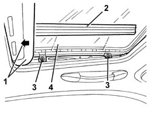
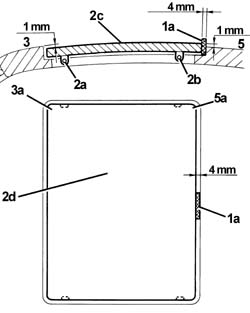

7030B17 sun-roof glass - fit
- Path
- Procedures > 70 FITTINGS > 7030 SUN ROOF AND HOOD > 7030B sliding roof > 7030B17 sun-roof glass - fit
- Kind
- repair procedure (removal / refitting; the operation number is the code)
- Applies to
- all engines; all production periods
- Interactive page
- https://sloeber94.github.io/elrnDB-a147/en/#/3025767
Applies to: all engines; all production periods
1. Move the sun roof to the closed position and open the blind.
2. Working on both sides, remove the protection.
3. Loosen the bolts.

Applies to: all engines; all production periods
1. Fit a 4 mm spacer (1a) between the rear of the glass panel and the wall of the hatchway in the roof.
2. Tighten the left and right rear bolts (2b)
3. Adjust the front right part (3a) of the glass panel (2c) to 1 mm lower than the roof's outer profile (as shown in the figure), then tighten the front right bolt (2a).
4. Loosen the left and right bolts (2b).
5. Adjust the rear right part (5a) of the glass panel (2c) to 1 mm higher than the roof's outer profile (as shown in the figure), then tighten the right bolt (2b).
6. Repeat points 2 and 5 for the left side of the glass panel.

Applies to: all engines; all production periods
Fit the protection, working on both sides.
Check that the sun roof works properly in all positions.